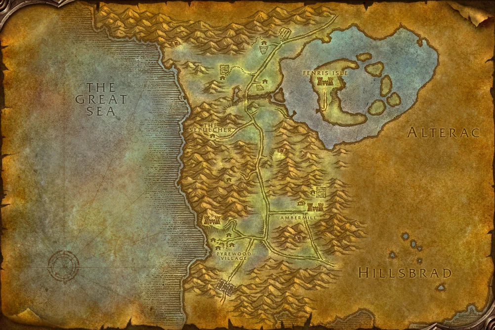

Übersicht
Level22–30
GebietSilverpine Forest
KategorieHordegebiet
TypClassic
Eingang: Shadowfang Keep above Pyrewood. Die Gebietskarte findest du im Reiter „Gebietskarte“.
Bosse & Loot
Icons: bekannte Item-IDs nutzen Original-Wowhead-Icons; übrige Einträge bekommen mindestens ein passendes Slot-/Waffenicon statt eines kaputten Bildes.
Rethilgore
2 bekannte Loot-Einträge
Razorclaw the Butcher
3 bekannte Loot-Einträge
Baron Silverlaine
3 bekannte Loot-Einträge
Commander Springvale
3 bekannte Loot-Einträge
Odo the Blindwatcher
3 bekannte Loot-Einträge
Deathsworn Captain (Rare)
2 bekannte Loot-Einträge
Fenrus the Devourer
3 bekannte Loot-Einträge
Wolf Master Nandos
3 bekannte Loot-Einträge
Archmage Arugal
3 bekannte Loot-Einträge
Notable BoE / Trash
5 bekannte Loot-Einträge
Dungeonquests
Quelle: Wowhead Forever „Every Dungeon Quest“, aktualisiert 31.10.2026. Beta-Dungeons können noch unvollständig sein.
Allianzquests
The Test of Righteousness · Level 20Start: Ironforge – Jordan StilwellPaladin only
Hordequests
The Book of Ur · Level 16Start: Undercity – Keeper Bel'dugur /way 53 54
Deathstalkers in Shadowfang · Level 18Start: Sepulcher – High Executor Hadrec
Arugal Must Die · Level 18Start: Sepulcher – Dalar Dawnweaver
Neutral / Klasse
The Orb of Soran'ruk · Level 20Start: The Barrens – Doan KarhanWarlock only
Silverpine Forest – Dungeon-Eingang

Marker: Shadowfang Keep above Pyrewood
Die Karte zeigt das komplette Gebiet, nicht mehr nur eine schematische Platzhalterfläche.
Die Karte zeigt das komplette Gebiet, nicht mehr nur eine schematische Platzhalterfläche.